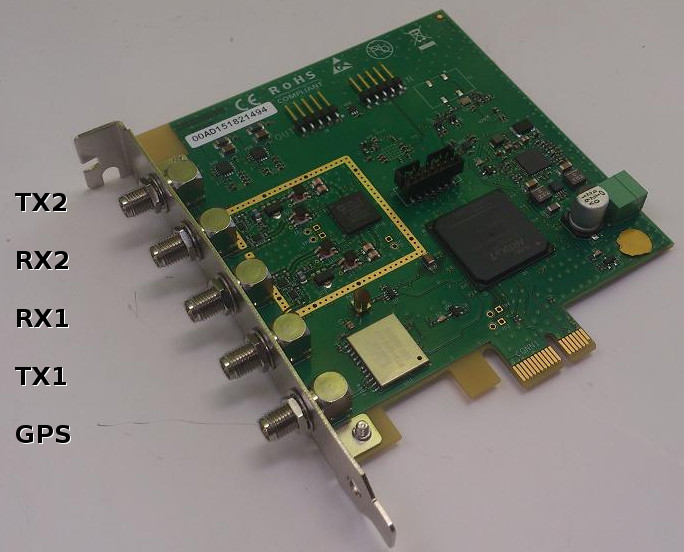
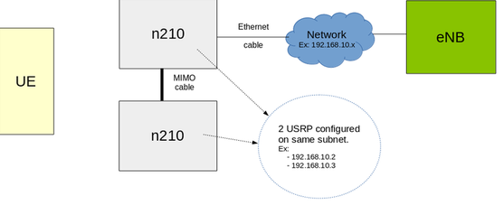
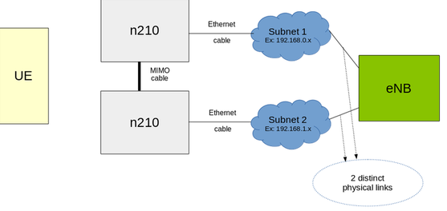
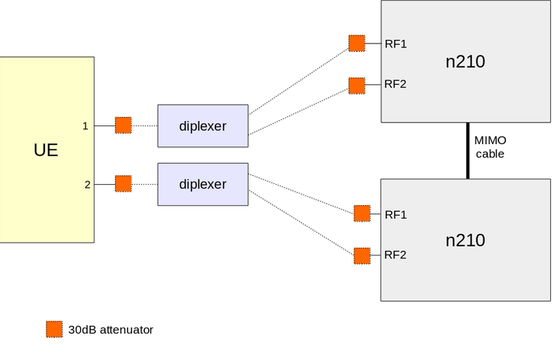
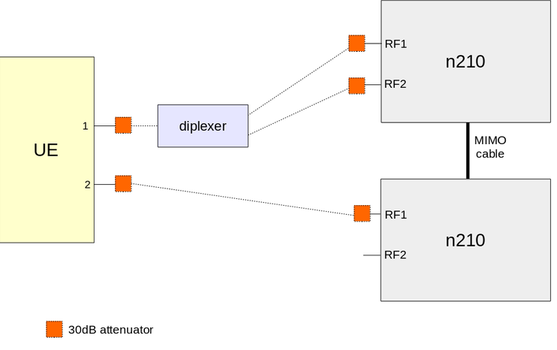
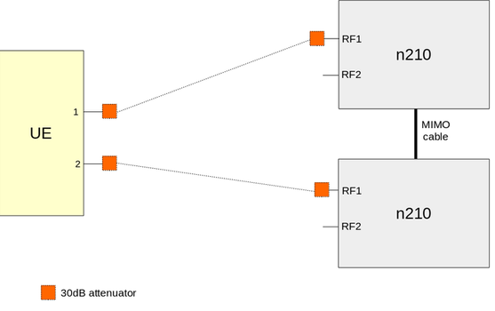

1 Introduction
LTEENB is a LTE base station (eNodeB) implemented entirely in software
and running on a PC. The PC generates a baseband signal which is sent
to a radio front end doing the digital to analog conversion. The
reverse is done for the reception.
LTEENB interfaces with a LTE Core Network thru the standard S1
interface. In particular the Amarisoft Core Network software (LTEMME)
can easily be connected to it to build a highly configurable LTE test
network.
2 Features
2.1 PHY layer
- LTE release 12 compliant.
- FDD and TDD configurations
- Tested bandwidths: 1.4, 3, 5, 10, 15 and 20 MHz.
- Handle several cells in intra-band or inter-band configurations.
- Transmission modes: 1 (single antenna) and 2 to 10 (MIMO 2x2).
- Wideband CQI/PMI reports
- HARQ support.
- Timing measurement thru the PRACH.
- Closed-loop UE power control.
- Frequency based MMSE equalizer.
- Highly optimized software turbo decoder.
- PAPR reduction support.
- Support of other radio heads can be added with an external shared library.
- Positioning Reference Signals (PRS) support.
- CSI-RS support.
- Multi-cluster PUSCH allocation.
- PUCCH 3 and PUCCH channel selection support.
- Carrier Aggregation support with cross carrier scheduling (tested with 2 DL channels)
- FDD-TDD Carrier Aggregation support.
- CoMP testing features (DMRS scrambling identity and QCL parameters can be selected).
- 256QAM DL support for PDSCH and MBMS.
- Support of release 11 TDD special subframe configurations 7 and 9.
2.2 Protocol Layer
- LTE release 12 compliant.
- Implements the MAC, RLC, PDCP and RRC layers.
- Round-robin MAC scheduler with dynamic MCS selection.
- Support of full and half duplex UEs.
- DRX support.
- Number of active users only limited by the available bandwidth.
- Fully configurable System Information Blocks.
- Integrity check and encryption using the AES and Snow3G algorithms.
- Support of RRC measurement with measurement gap.
- Supports intra eNodeB, S1 or X2 handovers.
- QoS support with user selectable DRB configuration for each QCI.
- ROHC support (RTP, UDP and IP v1 profiles).
- Public Warning System (CMAS/ETWS) support.
- MBMS support.
- Category 0 UE support.
2.3 Network interface
- Standard S1AP and GTP-U interfaces to the Core Network. Several PLMNs and
S1 interfaces can be used simultaneously.
- X2AP interface between eNodeBs.
- M1 interface for MBMS.
- IPv6 support.
2.4 User interface
- Configurable logging system for all channels with built-in text decoders.
- Wireshark MAC-LTE capture.
- Command line monitor.
- Test commands to initiate handover and to dynamically change the power level of each cell.
3 Requirements
3.1 Hardware requirements
3.2 Software requirements
4 Off-The-Shelf package
If you ordered the OTS package, you don't need installation so you can skip next chapter.
When booting, MME end eNB are automatically started within a screen.
If you are not familiar with screen here is what you must know:
- To have access to consoles, log on the machine with root access, then type:
screen -r
- To access MME monitor:
CTRL-A + 0
- To access eNB monitor:
CTRL-A + 1
- To exit screen
CTRL-A + d
5 Installation
The radio front end must be connected to one gigabit Ethernet port (don't use a
switch to connect them to avoid potential packet losses). The other
Ethernet port can be connected to the local network if necessary.
It is not recommended to run LTEENB in a virtual machine because it
has hard real time constraints.
We also assume that you have some Linux and LTE knownledge.
5.1 Linux setup
LTEENB and LTEMME use the SCTP protocol for which the necessary
packages are not usually installed. In order to install them, do as
root user:
- Fedora 17, 19, 20
yum install lksctp-tools kernel-modules-extra
- Ubuntu 14.04:
sudo apt-get install lksctp-tools linux-image-extra-3.13.0-24-generic
As there are naming differences in openssl libraries between Fedora and Ubuntu, you may create a symbolic link to make it work on Ubuntu:
ln -s /lib/x86_64-linux-gnu/libcrypto.so.1.0.0 \
/lib/x86_64-linux-gnu/libcrypto.so.10
ln -s /lib/x86_64-linux-gnu/libssl.so.1.0.0 \
/lib/x86_64-linux-gnu/libssl.so.10
and reboot the PC in case the Linux kernel was upgraded too.
5.2 RRH setup
Please refer to sub section of your radio frontend to set it up.
When configured, you will have to select it (See RRH selection).
5.2.1 USRP N200/N210 setup
Specific information is available at
http://files.ettus.com/uhd_docs/manual/html/index.html. We
give here a short summary.
The radio front end must be connected to one gigabit Ethernet port (don't use a
switch to connect them to avoid potential packet losses).
If you have 2 radio frontends for MIMO setup you may connect second device to
first one using MIMO cable or connect it to another gigabit Ethernet port
(MIMO cable remains necessary).
- Driver installation.
LTEENB is compiled with following UHD versions:
- 3.5.4
- 3.7.0
- 3.7.1
- 3.8.0
- 3.8.1
- 3.8.2
Using other versions may yield binary incompatibility if ABI version differs.
- Configure the Ethernet interface for the USRP. The parameters are:
- IPv4 address:
192.168.10.1
- Subnet mask:
255.255.255.0
- MTU size:
4000
Verify that you can ping the USRP device. Its default IP address is
192.168.10.2:
ping 192.168.10.2
The large MTU size is needed to use Jumbo frames which optimizes
the Ethernet bandwidth.
For following steps, you should change network stack buffer sizes (Run as root):
sysctl -w net.core.rmem_max=50000000
sysctl -w net.core.wmem_max=1048576
- Check that the USRP is visible:
uhd_usrp_probe --args addr=192.168.10.2
It should print the various capabilities of the USRP device. You can
send and receive some baseband samples to test the speed of the
Ethernet connection:
/usr/share/uhd/examples/benchmark_rate --args \
addr=192.168.10.2,send_frame_size=3972,recv_frame_size=3972 \
--tx_rate 12500000 --rx_rate 12500000 --duration 30
NB: you may find benchmark_rate there:
- Fedora 19/20: /usr/lib64/uhd/examples/benchmark_rate
- Ubuntu 14.04: /usr/lib/uhd/examples/benchmark_rate
The test runs during 30 seconds. There should be no error, overflow nor
underflow.
- If you did not already do it before, calibrate your device. Run as
root in this order:
uhd_cal_rx_iq_balance --verbose --args addr=192.168.10.2
uhd_cal_tx_iq_balance --verbose --args addr=192.168.10.2
uhd_cal_tx_dc_offset --verbose --args addr=192.168.10.2
It takes a few minutes for each command.
- Additional network configuration to increase the size of the network
buffers is included in the script lte_init.sh given with
LTEENB.
- MIMO. In order to simplify the setup, you can use the MIMO cable which
synchronizes the USRP clocks and allows one USRP
to act as an Ethernet switch for the other.
Else you need to connect each USRP on a different network interface.
5.2.2 USRP B200/B210 setup
The USRP B200/B210 are supported, but on some PCs the USB3 interface
does not work reliably. Moreover, there are still evolutions in the
corresponding UHD driver.
We recommend the following steps to try it:
- Install UHD driver as for N2x0 (See USRP N200/N210 setup), the B2x0 does not work with release < 3.7.0).
- Check that the B2x0 is available and upload the firmware:
uhd_usrp_probe
- Check that USB3 interface is working:
/usr/share/uhd/examples/benchmark_rate --args master_clock_rate=11.52e6 \
--tx_rate 11520000 --rx_rate 11520000 --duration 30
The test runs during 30 seconds. There should be no error, overflow
nor underflow.
NB: You should take a look at configuration file in config/b2x0 as it may require
some changes depending on disered bandwidth.
5.2.3 X300/X310 setup
The USRP X300/X310 are supported. The setup is very similar to the
N200/N210. The UHD driver version >= 3.7.0 must be installed. The X3x0
has a specific support for LTE sample rates.
NB: You should take a look at configuration file in config/x3x0 as it may require
some changes depending on disered bandwidth.
5.2.4 PCIe SDR
5.2.4.1 Compilation and installation
First, you need to compile the kernel module.
Your system will require kernel-devel and gcc packages to be installed.
Extract delivered SDR tarball and:
cd kernel
make
Then you need to copy Amarisoft driver to your eNB directory:
cd ..
cp trx_sdr.so <eNB path>
And last, copy config files:
cp -r config <eNB path>/config/sdr
5.2.4.2 Driver initialization
After each boot of your system you will need to initialize kernel module.
Go to extracted SDR tarbal and:
cd kernel
./init.sh
NB: this command requires root permission.
5.2.4.3 Connectors

5.2.5 Nutaq PicoSDR 2x2
Nutaq PicoSDR is already preinstalled.
5.3 Linux setup for best performance
LTEENB requires a lot of CPU power and it has hard real time
requirements (a maximum latency of 3 ms is required).
In order to get the lowest latency, it is recommended to set up the
performance frequency governor for each CPU core. An example is
included in the lte_init.sh script given with LTEENB.
Some buggy drivers are known to block the CPU during a few tens of
ms. When it happens, LTEENB displays UHD status: L=X U=Y
S=Z. One known problem is the DRM KMS cable polling. The script
lte_init.sh disables it automatically.
Other drivers such as Wifi controllers can give the same problem. In
order to avoid such problems, remove all unnecessary peripherals from
the PC.
5.4 UE setup
Insert the test USIM card in the device.
Enable data connection and roaming in the configuration of your device.
With LTE, no Access Point Name (APN) is necessary because a default one
is always provided by the network.
However, some UEs insists on having the same APN name as the MME to enable
IP connectivity.
As a result, start by removing any APN stored in the UE and manualy add APN
(Only APN name is required) as defined in MME configuration file
(Default is test123).
If possible, disable 2G (GSM) and 3G (WCDMA) access to have only LTE
access system in order to speed up the network search.
If possible, limit the LTE frequency bands used by the device to the
one you want to use in order to speed up the network search.
5.5 LTEMME installation
Decompress the LTEMME archive to a convenient place. The executable
ltemme can be launched from this directory.
5.5.1 Basic LTEMME configuration
The main configuration file is config/mme.cfg. It uses a
superset of the JSON syntax.
If your USIM card has different parameters from Anritsu, you need to
put its IMSI and secret key in the ue_db section.
You also need to change the DNS address that will be given to the UE
to match the DNS address of your local network (parameter
dns_addr).
5.5.2 License key installation
LTEMME needs a license key file to run. It is associated to your
PC, so if you replace it or change its hardware configuration you must
contact Amarisoft to get a new license key.
The following steps are needed to get this license file:
Once the license key is installed, ltemme should start
normally.
5.6 LTEENB installation
Decompress the LTEENB archive to a convenient place. The executable
lteenb can be launched from this directory.
5.6.1 Basic LTEENB configuration
The main configuration file is config/enb.cfg. It uses a
superset of the JSON syntax.
The default setup is for a 10 MHz LTE eNodeB. The main parameter you
need to change right now is the actual frequency you want to use. You
need to be sure that no interference is present on the frequency you
are using and that you have the legal right to use it (in most
countries it is illegal to transmit on LTE frequency bands without an
explicit authorization).
In order to reduce interferences, it is recommended to use a high
frequency band such as the 2600 MHz band (band 7) in Europe.
The parameter dl_earfcn gives the EARFCN of the center
frequency for the downlink. The corresponding uplink frequency is
automatically choosen. The center frequency can be arbitrarily choosen
provided the transmitted spectrum fully lies inside the choosen
band. So if f is the center frequency, B the LTE
bandwidth, f_min and f_max the band limits, the
following relation must hold:
f_min + 0.5 * B <= f <= f_max - 0.5 * B
The EARFCN is the frequency expressed in 100 kHz units starting from
an offset depending on the selected band. You can have the band
parameters and do convertions between EARFCNs and frequencies at
http://niviuk.free.fr/lte_band.php or by looking at the section
5.7.3 of 3GPP TS 36.101.
5.6.2 RRH selection
To select appropriate RF frontend to use, please execute following command:
./config/rf_select.sh <type>
Where type is your frontend type:
NB: you can lanch following command to see available frontends:
./config/rf_select.sh
5.6.3 License key installation
LTEENB needs a license key file to run. It is associated to your
PC, so if you replace it or change its hardware configuration you must
contact Amarisoft to get a new license key.
The following steps are needed to get this license file:
Once the license key is installed, lteenb should start
normally.
5.7 Initial testing
Customize and start the lte_init.sh script as root user to
configure the network and CPU governors.
Start the LTEMME software as root user. root priviledges
are needed to set up the virtual network interface.
./ltemme config/mme.cfg
In another terminal, start the LTEENB software as root user.
root priviledges are needed to use real time scheduling
priority.
./lteenb config/enb.cfg
The base station is now running. Type s1 in the command line
monitor of LTEENB to verify that it is connected to LTEMME. If it is
the case, type t to enable the MAC traces (the traces are
automatically disabled once you press return).
Turn on the UE and keep it at a few meters of the eNodeB antenna. It
starts scanning the LTE bandwidth. After a few minutes, it should
detect the eNodeB signal and transmit its first PRACH signal to the
base station. You should get a trace like:
PRACH: cell=01 seq=X ta=Y snr=Z dB
Then the UE will attach to the simulated LTE core network and
get its IP address. If it works, then the device will indicate it is
connected.
The core network maintains a persistent database storing all the
parameters of the configured UEs. It is by default in
config/lte_ue.db. If the initial connection is OK, you can get
the IP address of the UE from this file. You can then try to ping it
from the PC.
Then if the local network is correctly configured on the PC, the UE
can access to your local network (and internet if your local network
allows it).
6 Troubleshooting
There are many parameters in an LTE setup, so there are many cause of
problems. Here are a few ones we noticed during our tests:
6.1 LTEENB does not start
LTEENB must be launched as root so that it can use real time
scheduling.
If some librairies needed by LTEENB are not present, it means you need
to use another Linux distribution or to upgrade it.
6.2 UHD library ABI compatibility mismatch
If you get this kind of message while starting lteenb:
'trx_uhd_3.4.0.so' does not exist
It means that current UHD version on your system is not supported.
You should update it are install a supported one manually (see UHD driver compatibility).
If you have downloaded, compiled and installed manually the UHD driver (see USRP N200/N210 setup), you can force use of the generated library this way:
sudo LD_LIBRARY_PATH=<INSTALL_PATH>/uhd-source_003.007.000-1-stable/lib ./lteenb <CONFIG_FILE>
6.3 The license key file is not correct
You need to contact Amarisoft to get a valid license key and/or a USB
dongle.
6.4 Many messages 'UHD status: L=X U=Y S=Z' are displayed.
These messages indicate that there are underflows or overflows errors
when communicating with the USRP device. The most likely explanation
is that not enough CPU time is available. You can launch
top -H
To see which processes and threads use the CPU time. Normally only 2
LTEENB threads should use about 50% of one CPU core time each when the
eNodeB is idle. The following can be done to help:
- Remove unnecessary drivers and peripherals. See Linux setup for best performance.
- Launch
lteenb as root so that it can use real time scheduling.
- Don't connect the USRP to the PC thru a switch to avoid packet losses.
- Ensure that your CPU is fast enough. It should be at least a 4 core
Core i7 Nehalem or later.
- If your CPU is too slow, consider using a smaller LTE bandwidth (the CPU load is proportional to the bandwidth).
- If the errors happen during high traffic, be sure you have disabled the
debug log output (log_options option). It generates a lot of data and takes some CPU time.
- If the errors happen during high traffic, consider limiting the eNodeB uplink bit rate. See CPU load limitation.
For best performance, you can also remove unused daemons or cron jobs,
in particular:
- The automatic upgrade done by PackageKit or similar.
- The various scripts in /etc/cron.{hourly|daily|weekly} which take some time and which are not strictly needed:
mlocate, tmpwatch, man-db, prelink.
If the PC is only used as server, it is better to boot the PC in text
mode by default. If systemd is used by your Linux distribution
(Fedora), it is done by changing the link
/etc/systemd/system/default.target to
/lib/systemd/system/runlevel3.target. If init is used,
it is done by modifying /etc/inittab to use the run level 3 as
the default run level:
id:3:initdefault:
6.5 The initial PRACH signal is not received.
This is the most critical step. If you don't get the initial PRACH
signal, it indicates that something is wrong in your
configuration. Here are a few important points:
- Check that your EARFCN is correct and in a band without interference. Warning: the EARFCN corresponds to the frequency of the center of the bandwidth. Use a cable and an attenuator if you want to avoid interfering with another network or if you don't have the authorization to transmit on the corresponding frequency.
- Check that your UE is correctly configured: LTE must be enabled on the right frequency band.
- The UE may not get a good enough signal or may saturate. Try to move it closer or further from the base station antenna. Some UE have better performance with some frequency bands, so try another frequency band supported by the UE.
- Only if you have problems after changing the frequency band, make sure that you use a different
cell_id in enb.cfg. The UE memorizes the last parameters and won't search another frequency if the Cell Identity is not modified.
If none of the previous point helps, consider trying another frequency
band (change the EARFCN and update cell_id in enb.cfg).
6.6 The initial PRACH is received, but the UE is never attached.
Look at the /tmp/enb0.log log file. There can be several
problems. The normal steps are RRC connection, then NAS messages are
exchanged to attach the UE and authenticate it.
The possible problems are:
- Radio problems. In this case, no NAS messages are seen in the logs. Try to lower the TX gain of the radio frontend (
tx_gain parameter) to reduce the TX/RX interferences due to the lack of proper duplexer.
- Invalid IMSI configured. In this case, the dialog stops after the NAS attach request message.
- SIM authentication error. In this case, the dialog ends in the Authentication request/Authentication response NAS dialog. It means you don't have the correct secret key configured.
- Security configuration error. In the case, the dialog stops after the NAS security mode command. It indicates that the UE does not accept to be configured without integrity check and encryption. You need to find another UE which is more tolerant (we never hit this case, but it might happen).
- Immediate NAS detach after NAS attach complete. In this case, the UE
does not accept something in the network configuration. It can happen
if it requested IPv6 (we only support IPv4 in the default
configuration) or if the APN is not correct. It can also happen
because of an invalid UE database in the core network emulation. Try
to turn off and on the device several times to see if the problem
persists (there are various timeouts and number of NAS attempts which
can be triggered and solve the issue).
- Unexpected
PDN connectivity request. In this case, you see
PDN connectivity request and PDN connectivity reject in
the logs. Remove any explicit Access Point Name (APN) in the UE
configuration (the core network emulation only supports configuring a
default PDN in the initial attach).
6.7 The initial attach is OK but ping is not working.
If you get here, the device indicates that the LTE/4G connection is up
but the ping to the UE from the PC does not work. You can also try a
ping from the device to the PC (the PC can be pinged on 192.168.3.1).
Radio problems can still be the explication if the radio conditions
are too bad. The symptom of this case is that you see many PRACH
signals coming from the UE. Try to reduce the TX power with the
tx_gain parameter.
Another explanation can be that the UE does not accept roaming. Try to
enable it on the UE.
Another explanation can be bugs in the UE (or its PC driver if it is a
USB dongle) in case you changed the LTE configuration (we noticed it
in some cases). The symptom is that the IP packets are truncated when
doing tcpdump on the UE side. In case of doubt, just turn off
and on the UE (and the corresponding PC if it is a USB dongle) to
start from a clean state.
6.8 The ping is working but no Internet access is possible from the UE.
The most likely explanation is that the IP forwarding/masquerading is
not configured correctly on the PC. You need to look at the IP table
configuration (/sbin/iptables -n -v -L) and correct it if the
lte_init.sh configuration is not enough. Use of
tcpdump or wireshark on the different interfaces can
help to locate the problem.
Another possibility is that the DNS address given to the UE is not
correct (try to ping using IP address instead of host names).
Verify that roaming is activated on the UE. The UE may not accept
roaming and avoid IP access even if the ping is working.
7 Advanced Configuration
7.1 Logging
The eNodeB and the Core Network can output the messages of
all the layers to log files. See the log_options option to
select the layer to output and the level of verbosity. The log
filenames are defined with the log_filename option.
You can also use Wireshark to monitor the S1 (S1AP with embedded NAS,
GTP-U) link between the eNodeB and the Core Network.
7.2 Changing the LTE bandwidth
It is configured with the n_rb_dl parameter giving the number
of resource blocks. Use n_rb_dl = 6, 15, 25, 50, 75, 100 for the bandwiths 1.4, 3, 5, 10, 15, 20 MHz.
The SIB2 configuration should also be modified in
sib_sched_list. Preconfigured files are available for the
available bandwidths: sib23_rb6.asn, sib23_rb15.asn,
sib23_rb25.asn, sib23_rb50.asn, sib23_rb75.asn
and sib23_rb100.asn.
Notes:
- The 1.4 MHz bandwidth needs a specific scheduler configuration, so
use the configuration file enb-1_4mhz.cfg instead.
- The CPU load is proportional to the LTE bandwidth.
- Not all LTE bands allow all LTE bandwidths. For example, bands 7
(2.6 GHz) and band 20 (Europe 800 EDD) do not support the bandwidths
of 1.4 and 3 MHz.
7.3 CPU load limitation
In order to avoid using too much CPU time, it is possible to limit the
uplink MCS (pusch_max_mcs) and the number of iterations of the
turbo decoder (pusch_max_its). Normally it is only critical for
the larger LTE bandwidths (20 MHz). The symptom of too high CPU use
are many messages UHD status: L=X U=Y S=Z.
7.4 UE connection traces
By default or when using the t monitor command, the eNodeB
displays the status of the connection with the UEs. It stops
displaying them when you press return.
--DL--------------------- --UL---------------------------------------
UE_ID CL RNTI cqi ri mcs retx txok brate snr puc1 mcs retx rxok brate turbo phr
1 01 003d 12 1 21.1 0 361 1.77M 9.1 8.5 14.7 3 779 2.06M 1/3.5/10 -
UE_ID- S1 eNodeB UE identity, unique among all cells.
CL- Lower 8 bits of the cell identity (hexadecimal).
RNTI- C-RNTI of the UE.
cqi- Channel Quality Indicator, between 0 (bad) and 15 (very good).
ri- Rank Indicator (number of layers for MIMO).
mcs- Average Modulation and Coding Scheme.
retx- Number of transport Blocks retransmissions.
txok- Number of successfully transmitted transport blocks.
brate- Average bitrate, in bits per second.
snr- is the measured Signal to Noise Ratio for the uplink from the PUSCH
reference signals and the SRS.
puc1- is the measured Signal to Noise Ratio for the last PUCCH1.
turbo- gives the minimum, average and maximum number of iterations of the
turbo decoder.
phr- is the content of the last Power Headroom MAC control element sent by
the UE. It is expressed in dB. Negative values indicate that the UE
could not transmit with the required power.
7.5 UE Power control
The eNodeB does dynamic UE power control (see the dpc)
option. However, it is better to have a good initial UE power to avoid
retransmissions or interferences. So it is important to correctly set
the various power settings in the SIBs. In particular, to avoid
generating too much interference and to limit the battery drain, the
SIB1 p-Max parameter (maximum allowed power for the UE in dBm)
should be set to a low enough value (a few dBm).
It is also useful to tune the value of referenceSignalPower
(power per carrier of the reference signal in dBm) in SIB2. It is used
by the UE to compute the path loss and to adjust its own transmit
power.
7.6 Multi-cell support
The eNodeB can run several LTE cells. The cells can be configured
individually and share the same S1 interface with the Core Network.
7.6.1 Intra-band multi-cell
A configuration example is given in config/multi_cell.cfg for
two adjacent 5 MHz cells in band 7.
The monitor command cell_gain changes the relative DL power for
a given cell. For example, use
cell_gain 1 -100
to mute the first cell (cell_id = 1). Use:
cell_gain 1 0
to restore the default output power.
Constraints:
- The full transmitted spectrum must lie inside the maximum output bandwidth permitted by the radio head (hence 20 MHz for the USRP N2x0).
- The difference of the center frequencies of each cell must be a multiple of 300 kHz (hence the difference of their EARFCN must be a multiple of 3).
- The cells must have the same
prach-ConfigIndex (SIB2), i.e. their PRACH must have the same duration and transmitted in the same subframes.
- Multiple cells can be set at the same frequency provided their physical cell identity (
n_id_cell property) and PRACH rootSequenceIndex (SIB2) are different to minimize the inter-cell interferences. In the current version, there is no resource reservation among the cells, so a performance degradation happens if they transmit at the same time in the same resource blocks. So it is currently better to use cells at different frequencies.
7.6.2 Inter-band multi-cell
A configuration example is given in config/enb-ca.cfg for two
SISO 5 MHz cells in bands 2 and 4. Two URSP N210 connected with a MIMO
cable are needed to test this configuration.
This configuration also enable carrier aggregation for release 10
UEs.
Notes for carrier aggregation:
- The eNodeB ignores the supported band combinations
reported by the UE and always enable carrier aggregation for release
10 UEs.
- The eNodeB supports up to 5 aggregated DL or UL carriers, depending on the available RF channels and CPU power. 2 DL and 1 UL carriers were tested with real UEs.
- Mixed FDD and TDD aggregated carriers are not supported yet.
7.7 Handover support
In the current version, handover is supported as an experimental
feature. Intra-eNodeB, S1 or X2 handovers are supported. The handover
can be manually initiated with the handover monitor command or
automatically initiated based on UE measurement.
Test case for intra-eNodeB handover:
- Start lteenb with the multi cell configuration config/multi_cell.cfg.
- Wait until the UE connects to a cell (use the
t command to active the MAC traces or use the monitor command ue to list the connected UEs).
- Start a long network transfer or a ping to the UE.
- Reduce the power by 10 dB on the serving cell. If the UE is on cell 1:
cell_gain 1 -10
After some time the UE will make a handover to cell 2 (check it
with the t command by looking at the CL column).
- Increase the power of cell 1 and reduce the power of cell 2:
cell_gain 1 0 ; cell_gain 2 -10
After some time the UE will make a handover to cell 1.
- You can also force a handover with the
handover monitor command
by giving the UE ID and the Physical Cell Identity (and optionally the
DL EARFCN) of the target cell.
The behavior is similar with S1 and X2 handovers, but at least two
eNodeBs (and two radio heads) are needed to use it.
In all the cases, it is important to have a valid neighbour cell
configuration for each cell (ncell_list property) so that the
source eNodeB can deduce target the Cell Identity from the target
Physical Cell Identity and DL EARFCN.
7.8 MIMO support
MIMO is currently supported with following radio frontends:
- USRP N2x0 with their SBX daughterboards (Two device are needed for MIMO).
- USRP B2x0.
- USRP X3x0. (Only up to 10Mhz bandwidth with gigabit Ethernet link).
- Nutaq PicoSDR 2x2
The configuration mimo-2x2-5mhz.cfg demonstrates a 5 MHz MIMO
configuration using transmission mode 3 (large delay CDD).
The configuration mimo-2x2-20mhz.cfg demonstrates a 20 MHz MIMO
configuration with only one N2x0 connected by ethernet (second is
using MIMO cable).
Note: the current UHD driver uses a lot of CPU time when MIMO is
enabled. If it is an issue in your tests, please contact Amarisoft to
get a modified UHD driver which uses less CPU time.
7.9 MIMO environment setup
7.9.1 Over the air
To setup your MIMO environment here is a detailed diagram of how to proceed.

This configuration may have a bottle neck at ethernet side because USRP speed is limited to 1Gbps.
That's why for 20Mhz MIMO configuration, downlink sampling rate is limited to 8 (dl_sample_bits parameter).
You can remove this constraint with the following diagram:

7.9.2 Using cable
Note that the diagram provided below are only example.
You may adapt depending on the UE.
7.9.2.1 FDD
If you are using FDD mode, the general case will be:

On most UE, second antenna is only used for RX so you can simplify with:

7.9.2.2 TDD
If your are using TDD mode, only one antenna is necessary per USRP.
Thus, you only need following diagram:

7.10 TDD support
The configuration file enb-tdd.cfg is an example of TDD
configuration. The eNodeB supports all 7 ULDL TDD configurations.
8 Configuration reference
8.1 Configuration file syntax
The main configuration file uses a syntax very similar to the
Javascript Object Notation (JSON) with few extensions.
- Supported types:
- Numbers (64 bit floating point). Notation:
13.4
- Complex numbers. Notation:
1.2+3*I
- Strings. Notation:
"string"
- Booleans. Notation:
true or false.
- Objects. Notation:
{ field1: value1, field2: value2, .... }
- Arrays. Notation:
[ value1, value2, .... ]
- The basic operations
+, -, * and / are
supported with numbers and complex numbers.
- The numbers
0 and 1 are accepted as synonyms for the
boolean values false and true.
- {} at top level are optional.
- " for property names are optional.
- Properties can be duplicated.
Merge will be done by recursively overriding values considering reading direction.
{
value: "foo",
value: "bar",
sub: {
value: "foo"
},
sub: {
value: "bar"
}
}
Will be equivalent to:
{
value: "bar",
sub: {
value: "bar"
}
}
- Files can be included using include keyword (must not be quoted) followed by a string (without :) representing the file to include (path is relative to current file) and terminating by a comma.
Arrays can't be included.
Merge will be done as for duplicate properties.
If file1.cfg is:
value: "foo",
include "file2.cfg",
foo: "foo"
And file2.cfg is:
value: "bar",
foo: "bar"
Final config will be:
{
value: "bar",
foo: "foo"
}
The System Information Blocks use the ASN.1 GSER syntax defined in RFC
3641 (Generic String Encoding Rules for ASN.1 Types). The description
of the exact content of the System Information Blocks can be found in
3GPP TS 36.331 (RRC).
8.2 Global properties
log_filename-
String. Set the log filename. If no leading
/, it is relative to the
configuration file path. See Log file format.
log_options-
String. Set the logging options as a comma separated list of assignments.
- layer.level=verbosity. For each layer, the log verbosity can be set
to
none, error, info or debug. In debug
level, the content of the transmitted data is logged.
- layer.max_size=n. When dumping data content, at
most
n bytes are shown in hexa. For ASN.1 or NAS content, show the full content of the message if n > 0.
- layer.key=[0|1]. Dump security keys (NAS and RRC layers).
- layer.crypto=[0|1]. Dump plain and ciphered data (NAS, RRC and PCDP layers).
- time=[sec|short|full]. Display the time as seconds, time only
or full date and time (default = time only).
- file=cut. Close current file log and open a new one.
- file.rotate=now. Rename current log with timestamp and open new one.
- file.rotate=size. Rename current log every time it reaches size bytes open new one.
Size is an integer and can be followed by K, M or G.
- file.path=path. When log rotation is enabled, move current log to this path instead of
initial log path.
- bcch=[0|1]. Enable or disable BCCH log. The BCCH is always
transmitted, so it gives large logs when enabled.
- append=[0|1]. (default=0). If 0, truncate the log file when
opening it. Otherwise, append to it.
Available layers are: phy, mac, rlc, pdcp, rrc, nas, s1ap, x2ap, gtpu
pcap- Optional object. Gives the Wireshark capture options. The
mac-lte-framed protocol using link-layer type 147 is supported (http://wiki.wireshark.org/MAC-LTE). In order to enable it in Wireshark, go to the menu Edit->Preferences->protocols->DLT_USER->Edit->New and add the DLT type 147 (User 0) with payload protocol mac-lte-framed.
filename- String. Filename in which the capture is stored.
bcch- Optional boolean (default = false). If true, the BCCH SI PDUs are
logged. It is disabled by default because the capture size increases
even when the eNodeB is idle.
max_data_len- Optional integer (default = 65536). Maximum captured MAC PDU length
per packet.
mac_lte_ext- Optional boolean (default = false). Output additional MAC and PHY
information. A recent (after Jan 1, 2014) development version of
Wireshark is required to use it.
use_pipe- Optional boolean (default = false). Capture in a pipe instead of a regular pipe. This allow live capture with wireshark:
wireshark -k -i <filename>.
Note that it can be used only once as wireshark requires initial header.
enb_name-
Optional string. Set eNB name used in S1 connection setup request.
gtp_addr-
String. Set the IP address (and optional port) on which the GTP-U
packets are received. The default port is 2152. It is normally the IP
address of the network interface connected to the core network.
mme_list- Array of objects. List of MME to which the eNodeB is connected. Each
object contains the following properties:
mme_addr-
String. Set the IP address (and optional port) of S1AP SCTP
connection to the MME. The default port is 36412.
Syntax:
- "1.2.3.4" (use default port)
- "1.2.3.4:5678" (use explicit port)
- "2001:db8:0:85a3::ac1f:8001" (IPv6 address and default port)
- "[2001:db8:0:85a3::ac1f:8001]:5678" (IPv6 address and explicit port)
gtp_ext_addr-
Optional string. Set the IP address on which the Core Network should
transmit the GTP-U packets. It is the same as gtp_addr by
default. It can be different if eNodeB is behind a NAT.
s1ap_bind_addr- Optional string. IP address and optional port on which the S1AP SCTP
connection is bound.
x2ap_bind_addr- Optional string. IP address and optional port on which the X2AP SCTP
connection is bound.
For backward compatibility, if mme_list is omitted, then a
single MME is assumed and the properties mme_addr,
gtp_ext_addr and s1ap_bind_addr are expected at the top
level.
x2_peers- Optional array of strings. IP addresses and optional port of other
eNodeBs to establish X2 connections. The default port is 36422.
mcc- String. The MCC part of the PLMN (3 digits). This property is
obsolete. Use
plmn_list instead.
mcc- String. The MNC part of the PLMN (2 or 3 digits). This property is
obsolete. Use
plmn_list instead.
enb_type- Optional enumeration: macro or home (default = macro). Select between
macro or home eNodeB.
enb_id- Integer. The 20 bit (macro) or 28 bit (home) eNodeB global identifier
rf_driver- Object. Parameters of the radio driver. See Radio driver configuration.
tx_gain- Float or array of floats. Transmit gain in dB. The range is device
dependent. For the USRP N2x0 device with the SBX daughterboard, the
range is 0 to 31.5 dB. With an array of float a different gain is
specified for each channel.
rx_gain- Float or array of floats. Receive gain in dB. The range is device
dependent. For the USRP N2x0 device with the SBX daughterboard, the
range is 0 to 31.5 dB. With an array of float a different gain is
specified for each channel.
tx_gain_offset- Optional float (default = -11 dB). Set the digital gain. Warning: do
not change it unless you know what you do because a too high value
introduces saturation in the output.
com_addr- Optional string. Address of the web socket server remote API. See Remote API.
If set, the web socket server for remote API will be enabled and bound to this address.
Default port is 9000.
Setting IP address to 0.0.0.0 will make remote API reachable through all network interfaces.
com_name- Optional string. Sets server name. ENB by default
cell_list- Array of object. Each element gives the configuration of a cell. The
property
cell_default gives a default value for each
property. See Cell configuration.
cell_default- Optional Object. Gives a default value for the cell configuration.
8.3 Advanced properties
dl_freq- Optional float. Tuning frequency in MHz for the downlink. It is
automatically set to the average of the DL center frequency of each
cell.
In the multi-cell case, if the radio head has a degraded output near
the center of the transmitted spectrum (which is the case for zero IF
TX or RX architectures), it is interesting to move the center of the
transmitted spectrum outside the spectrum of every cell or in the
middle of the spectrum of a given cell.
In this case, the dl_freq property can be used. It must be set
so that for each cell dl_freq - dl_cell_freq is a multiple of
15 kHz (dl_freq_cell is assumed to be the center frequency of a
cell).
Note: if you want to use non standard LTE frequencies, use the
custom_freq_band option.
ul_freq- Optional float. Tuning frequency in MHz for the uplink. It is
automatically set to the average of the UL center frequency of each
cell.
Same remark as dl_freq.
sample_rate- Optional float. Sample rate in MHz. It is normally automatically set
depending on the radio head capabilities and selected cell bandwidth.
sample_rate_num- Optional integer. Main sample rate used for the LTE signal processing
in 1.92 MHz units (hence 3 means 5.76 MHz). It is normally
automatically set depending on the radio head capabilities and
selected cell bandwidth. If the resulting rate is different from
sample_rate, a fractional sample rate interpolator is used to
convert the sample rate.
tx_time_offset- Optional integer. Time offset (in samples) for the TX stream relative
to the RX stream. It may be needed to compensate internal delays in
the radio head.
custom_freq_band- Optional object. Define a non standard LTE frequency band. Standard
bands can also be overriden by this option. If the uplink information
is not provided, it is assumed to be the same as the downlink (TDD
band).
band- Range: 1 to 256.
dl_earfcn_min- Range: 0 to 262143.
dl_earfcn_max- Range: 0 to 262143.
dl_freq_min- Float. Low DL frequency in MHz.
ul_earfcn_min- Optional integer. Range: 0 to 262143.
ul_earfcn_max- Optional integer. Range: 0 to 262143.
ul_freq_min- Optional Float. Low UL frequency in MHz.
papr_reduction- Optional object. Define the parameters for Peak to Average Power Ratio
(PAPR) reduction. It is only useful if you use a high power
amplifier. In the current version it takes a significant amount of CPU
time, so it is only usable for LTE bandwidth <= 10 MHz.
The following properties are available:
enabled- Boolean. If true, PAPR reduction is enabled.
a_max- Float. Set the cut-off level in dB relative to the
Reference Signal power.
evm_max- Float. Set the maximum Error Vector Magnitude (EVM) for 64QAM.
oob_points- Array of floats. Each pair of number defines a point of the
maximum allowed distorsion curve. The first number is the frequency
offset in MHz from the edge of the LTE spectrum. The second number
is the power level in dB. The actual curve is linearly interpolated
between the points.
An example of use is given in the configuration enb-1_4mhz.cfg.
8.4 Radio driver configuration
The name property selects the driver. The corresponding DLL
file name is trx_name.so. It is searched in the lteenb
executable directory, in /usr/lib/lteenb and
/usr/local/lib/lteenb. The following drivers are currently
available:
dummy- Dummy driver. Can be used to measure the RX to TX latency.
uhd- Ettus Research UHD driver for USRP N2x0, B2x0 and X3x0 series.
perseus- Nutaq driver for PicoSDR 2x2.
8.4.1 Dummy driver
No specific properties are available.
8.4.2 UHD driver
The following properties are available:
args- String. Set the UHD specific arguments (they are defined in the UHD documentation).
sync- Optional string. Select the synchronization type.
none is the
default value and selects the internal clock. external selects
an external clock and PPS. mimo selects the N2x0 MIMO
cable. external_clock selects an external clock but keeps the
internal PPS.
dl_sample_bits- Optional integer (default = 16). Se the number of bits per DL
sample. Allowed values are 8, 12 or 16.
ul_sample_bits- Optional integer (default = 16). Se the number of bits per UL
sample. Allowed values are 8, 12 or 16 (Use 8 bites carefully).
tx_subdev- Optional string. Sets tx subdev as specified in UHD API.
rx_subdev- Optional string. Sets rx subdev as specified in UHD API.
8.5 Cell configuration
8.5.1 Basic parameters
These parameters are the most important ones and must usually be
modified when a new cell is added.
plmn_list- Array of objects or strings. List of PLMNs broadcasted by the
eNodeB. At most 6 PLMNs are supported. Each element of the array is
either a PLMN (5 or 6 digit string) or an object containing the
following properties:
plmn- String. PLMN (5 or 6 digits).
reserved- Boolean. True if the cell is reserved for operator use.
When reserved is not provided, its default value is false.
dl_earfcn- Range: 0 to 262143. Set the DL EARFCN. See
http://niviuk.free.fr/lte_band.php to convert between the center frequency
and EARFCN.
When several cells share the same radio front end, the difference of
their center DL frequency must be a mutiple of 300 kHz (i.e. the
difference of their DL EARFCN must be a multiple of 3).
ul_earfcn- Optional. Range: 0 to 262143. Set the UL EARFCN. If not provided, the
default DL/UL gap is used (i.e. ul_earfcn = dl_earfcn +
18000).
ul-CarrierFreq in SIB2 is automatically set to the
corresponding value.
When several cells share the same radio front end, the difference of
their center UL frequency must be a mutiple of 300 kHz (i.e. the
difference of their UL EARFCN must be a multiple of 3).
multi_band_list-
Optional array of integers. List the additional bands supported by the
cell, in decreasing priority order (MFBI feature). The downlink and
uplink frequency of the cell must exist in all these bands.
cell_id- Range: 0 to 255. 8 bit cell identifier. For a macro eNodeB, the 28 bit
cell identifier is the concatenation of
enb_id and
cell_id.
tac- Range: 0 to 65535. Tracking Area Code of the cell.
n_id_cell- Range: 0 to 503. Physical cell identifier. Each neighbour cell
operating on the same frequency must have a different physical cell
identifier modulo 3.
root_sequence_index- Range: 0 to 837. Set the PRACH root sequence index. It must be
different for each neighbour cell operating on the same frequency and
sharing the same PRACH configuration.
ncell_list- Optional array of objects. List of neighbour cells. Used for to
convert the physical cell identity and EARFCN to a cell identity in
case of handover. Each neighbour cell is defined by the following
properties:
n_id_cell- Range: 0 to 503. Physical cell identity.
dl_earfcn- Optional. Range 0 to 262143. DL EARFCN. If not present, it is assumed
to be the same as the current cell.
plmn- Optional string. PLMN of the cell (5 or 6 digits). The default is
the same PLMN as the eNB.
cell_id- Integer. 28 bit cell identifier.
tac- Range: 0 to 65535. Tracking Area Code.
type- Optional string. Can be "macro" (default) for macro eNB or "home" for home eNB. Only used for S1 handover.
n_rb_dl- Integer. Range: 6 to 100. Set the number of DL resource blocks. The
corresponding LTE bandwidth can be deduced from the following table:
6- 1.4 MHz
15- 3 MHz
25- 5 MHz
50- 10 MHz
75- 15 MHz
100- 20 MHz
Note: It is always necessary to modify the SIB2 when changing the LTE
bandwidth.
8.5.2 Advanced parameters
n_antenna_dl- Enumeration: 1, 2, 4 or 8. Number of DL antennas. Currently 1 (SISO)
or 2 (MIMO 2x2) are supported.
n_antenna_ul- Enumeration: 1, 2, 4 or 8. Number of UL antennas. Currently 1 (SISO)
or 2 (MIMO 2x2) are supported.
n_antenna_pbch- Optional enumeration: 1, 2 or 4 (default = n_antenna_dl). Number of
PBCH antennas. Must be <= n_antenna_dl.
rf_port- Optional integer (default = 0). This parameter selects the RF port
when several cells on different RF interfaces or RF bands are handled
by the eNodeB. The number of supported RF ports depends on the radio
head. For example, each N210 counts as one RF port.
cyclic_prefix- Enumeration: normal or extended. Set the DL cyclic prefix.
uldl_config- (TDD only) Range: 0 to 6. TDD frame configuration.
sp_config- (TDD only) Range: 0 to 9. TDD special subframe configuration. The
special subframe 7 (with extended cyclic prefix) and 9 (with normal
cyclic prefix) from the release 11 are supported.
power_p_sync- Optional float (default = 0). Set the relative power in dB of the Primary
Synchronization Signal.
power_s_sync- Optional float (default = 0). Set the relative power in dB of Secondary
Synchronization Signal.
power_pcfich- Optional float (default = 0). Set the relative power in dB of PCFICH.
power_pbch- Optional float (default = 0). Set the relative power in dB of PBCH.
power_phich- Optional float (default = 0). Set the relative power in dB of PHICH.
power_pdcch- Optional float (default = 0). Set the relative power in dB of PDCCH.
power_pdsch_si- Optional float (default = 0). Set the relative power in dB of PDSCH
when transmitting SI/RA/P-RNTI information.
phich_duration- Enumeration: normal or extended. Set the PHICH duration.
phich_resource- Enumeration: 1/6, 1/2, 1 or 2. Set the PHICH resource.
sib1- String. Filename of the textual ASN.1 content (GSER syntax) for
SIB1. The fields
plmn-Identity, trackingAreaCode,
cellIdentity and freqBandIndicator are automatically
modified by the eNodeB.
sib_sched_list- Array of strings. Filenames of the other SIBs in the same order as the
scheduling list in SIB1. The first entry must contain the SIB2. The
content is in textual ASN.1 (GSER syntax).
The eNodeB uses parameters from SIB2 for its configuration. The SIB2
field rootSequenceIndex is automatically modified by the eNodeB.
si_coderate- Float. Maximum code rate for System Information Blocks (SIBs).
rar_coderate- Optional float. Maximum code rate for Random Access Response (RAR) (default = same as
si_coderate).
paging_coderate- Optional float. Maximum code rate for paging messages (default = same as
si_coderate).
paging_cat0_coderate- Optional float. Maximum code rate for paging messages for category 0 UEs (default = same as
paging_coderate).
si_pdcch_format- Range: 2 to 3. Log2 of the number of CCEs for PDCCH for SIBs.
rar_pdcch_format- Optional. Range: 2 to 3. Log2 of the number of CCEs for PDCCH for RAR (default = same as
si_pdcch_format).
paging_pdcch_format- Optional. Range: 2 to 3. Log2 of the number of CCEs for PDCCH for paging (default = same as
si_pdcch_format).
paging_cat0_pdcch_format- Optional. Range: 2 to 3. Log2 of the number of CCEs for PDCCH for paging for category 0 UEs (default = same as
paging_pdcch_format).
sib_sfn_offset- Optional array of integer. If present, set the offsets of the SIBs in
the SI window. At most 4 offsets are allowed. If it not present, the
eNodeB uses default values.
n_symb_cch- Range: 1 to 4. Number of symbols for CCH.
half_duplex_ue- Optional boolean (default = true). If false, assume full duplex UEs
even before the actual UE capabilities are received (test only).
allow_cat0_ue- Optional boolean (default = false). If true, category 0 UEs (release
12) can connect to the eNodeB. The corresponding SIB1 field is set and
the scheduler takes the category 0 UE scheduling restrictions into
account.
pdsch_dedicated- Object. PDSCH dedicated configuration. Currently shared by all
UEs. The following properties are defined:
p_a- Enumeration: -6, -4.77, -3, -1.77, 0, 1, 2, 3. Set the
p_a
parameter which sets the PDSCH average power.
dmrs- Optional array of 2 integers. Range: 0 to 503. Specifies the
DMRS scrambling identity when transmission mode 10 is used (release 11).
qcl_operation- Optional enumeration:
typeA or typeB (default =
typeB). Select the PDSCH Quasi Co-Location parameter when
transmission mode 10 is used (release 11). Note that this parameter
does not modify the eNodeB behavior, it just changes the value of
the corresponding RRC field.
pdcch_format- Optional. Range: 0 to 3. If defined, force for number of CCEs for UE
specific PDCCH to
2^pdcch_format. Otherwise it is computed from
the reported CQI.
initial_cqi- Range: 0 to 15. This CQI value is assumed when none is received from the UE.
pdsch_mcs- Range: 0 to 28. Force the PDSCH MCS (test feature). Note: the actual
MCS selected by the scheduler may be different in order to keep the
same average code rate.
pdsch_fixed_rb_alloc- Optional boolean (default = false). If true, force fixed PDSCH RB
allocation using the parameters
pdsch_fixed_rb_start and
pdsch_fixed_l_crb. The actual allocated PDSCH RBs are a subset
of the selected RBs.
pdsch_fixed_rb_start- Optional integer. First RB for fixed PDSCH allocation (see
pdsch_fixed_rb_alloc).
pdsch_fixed_l_crb- Optional integer. Number of consecutive RBs for fixed PDSCH allocation
(see
pdsch_fixed_rb_alloc).
pucch_dedicated- Optional object. PUCCH dedicated configuration. Currently shared by
all UEs.
tdd_ack_nack_feedback_mode- (TDD only) Enumeration:
bundling or
multiplexing. Define the ACK/NACK feedback mode for TDD.
tdd_ack_nack_feedback_mode_r10- (TDD only) Optional enumeration:
bundling,
multiplexing, cs, pucch3. Select the ACK/NACK
feedback mode for release 10 TDD UE. cs means channel
selection. By default it is the same as
tdd_ack_nack_feedback_mode.
ack_nack_feedback_mode_ca- Optional enumeration:
cs, pucch3. Select the ACK/NACK
feedback mode when two serving cells are enabled (carrier
aggregation). When more than two serving cells are enabled,
pucch3 is always used.
n1_pucch_an_cs_count- Optional integer (default = 0). Select the number of PUCCH 1
resources used for PUCCH 1B channel selection. It is only useful
when
ack_nack_feedback_mode_ca is set to cs. This
value limits the number of UEs which can be scheduled in the same
TTI while doing carrier aggregation.
n3_pucch_an_n_rb- Optional integer (default = 0). Select the number of UL resources
blocks reserved for PUCCH 3 signalling. It is only necessary if PUCCH
3 ACK/NACK feedback is selected for carrier aggregation or TDD.
pusch_dedicated- Object. PUSCH dedicated configuration. Currently shared by all
UEs. The following properties are defined:
beta_offset_ack_index- Range: 0 to 15.
beta_offset_ri_index- Range: 0 to 12.
beta_offset_cqi_index- Range: 2 to 15.
pusch_msg3_delta_power- Optional. Range: -6 to 8 (default = 0). Relative power for Msg3 (=CCCH
RRC Connection Request) in dB. It is internally rounded to an even
value.
pusch_msg3_mcs- Range: 0 to 15. MCS for Msg3 (=CCCH RRC Connection Request).
pusch_mcs- Optional. Range: 0 to 28. If defined, force the PUSCH MCS for all UEs
(test feature). Otherwise it is computed from the last received
SRS/PUSCH.
pusch_fixed_rb_alloc- Optional boolean (default = false). If true, force fixed PUSCH RB
allocation using the parameters
pusch_fixed_rb_start and
pusch_fixed_l_crb. pusch_fixed_l_crb must
be of the form 2^n1*3^n2*5^n3. PUSCH are allocated only if they
don't overlap with PUCCH or PRACH, so care must be taken when defining
the range. In some cases, PUSCH retranmissions may use other RBs.
pusch_fixed_rb_start- Optional integer. First RB for fixed PUSCH allocation (see
pusch_fixed_rb_alloc).
pusch_fixed_l_crb- Optional integer. Number of consecutive RBs for fixed PUSCH allocation
(see
pusch_fixed_rb_alloc).
pusch_multi_cluster- Optional boolean (default = false). If true, enable multi-cluster
PUSCH resource allocation for the UEs supporting it (release
10). Note: this is a UE test feature, so the multi cluster allocation
is not optimized by the scheduler.
transmission_mode- Optional. Range: 1 to 6 (default = 1). Set the DL transmission mode
(same for all UEs). The values of 1 and 2 are equivalent and
automatically adjusted to 1 or 2 depending on the number of
DL antennas. The corresponding transmission modes are:
1- Single antenna port.
2- Transmit diversity.
3- Large delay CDD.
4- Closed-loop spatial multiplexing.
5- Multi-user MIMO.
6- Closed-loop spatial multiplexing using single transmission layer.
Notes:
- Transmission modes 2 to 6 are only usable when
n_antenna_dl >=
2 (more than one DL antenna).
- Transmission modes 3 and 4 need rank indicator reporting for proper
operation (see the
m_ri parameter).
- Currently only
n_antenna_dl = 1 or 2 were tested.
- The current MAC scheduler does not schedule several UE at the same
time when using transmission mode 5.
codebook_subset_restriction- Optional string. Bit string giving the allowed code book indexes for
transmission modes 3, 4, 5, 6. The number of bits is given by TS.36
213 table 7.2-1b. The default value is all ones (i.e. all code book
indexes are allowed).
transmission_mode_opt- Optional integer (default = 0). Range: 0 or 7 to 10. If the UE
supports the indicated transmission mode, it is enabled with the
first RRC connection reconfiguration. The value 0 is used to keep the
initial transmission mode selected by
transmission_mode. The
available optional transmission modes are:
7- Antenna port 5 (UE specific, release 8).
8- Dual layers, antenna ports 7 and 8 (UE specific, release 9).
9- Up to 8 layers, antenna ports 7 to 14 (UE specific, release 10).
10- Up to 8 layers, antenna ports 7 to 14 (UE specific, CoMP, release 11).
The transmission modes 8, 9 and 10 require at least two DL antennas.
codebook_subset_restriction_opt- Optional string. Bit string giving the allowed code book indexes for
transmission modes 8, 9 or 10. The number of bits depends on the
selected transmission mode and number of DL antennas:
tm8, 2 antennas:- 6 bits
tm8, 4 antennas:- 32 bits
tm9 or tm10, 2 antennas:- 6 bits
tm9 or tm10, 4 antennas:- 64 bits
tm9 or tm10, 8 antennas:- 109 bits
n_scid- Optional integer (default = 0). Range 0 to 1. Force the scrambling
identifier when antenna ports 7 or 8 are used.
ue_specific_port- Optional integer (default = 7). Range 7 to 8. When single layer
transmission is used with transmission mode 8, force the corresponding
antenna port.
csi_rs_nzp- Optional object. Specifies the Non-Zero Power Channel-State Information
Reference Signals (CSI-RS) sent by the eNodeB for release 10 UEs. The
following fields are defined:
period- Enumeration: 5, 10, 20, 40, 80. Period (in ms) of the CSI-RS.
offset- Range: 0 to period - 1. Offset (in ms) of the CSI-RS.
n_antenna- Integer: 1, 2, 4 or 8. Must be less than the number of DL antennas.
resource_config- Integer. Selected CSI-RS resource configuration. The exact range
depends on the selected cyclic prefix and frame structure. See
tables 6.10.5.2-1 and 6.10.5.2-2 from TS 36.211.
p_c- Range: -8 to 15. Relative power in dB compared to the cell specific
reference signal.
csi_rs_zp- Optional object. Specifies the Zero Power Channel-State Information
Reference Signals reserved by the eNodeB for release 10 UEs. The
following fields are defined:
period- Enumeration: 5, 10, 20, 40, 80. Period (in ms) of the CSI-RS ZP.
offset- Range: 0 to period - 1. Offset (in ms) of the CSI-RS ZP.
resource_config_list- Range: 0 to 65535. Bit mask of the selected zero CSI-RS ZP
configurations. The first configuration is in bit 15. The
corresponding configurations are given in tables 6.10.5.2-1 and
6.10.5.2-2 from TS 36.211 (column with 4 antennas).
csi_rs_im- Optional object. Specifies the Channel-State Information Reference
Signals reserved by the eNodeB for Interference Measurement for
release 11 UEs (CSI-RS IM). The following fields are defined:
period- Enumeration: 5, 10, 20, 40, 80. Period (in ms) of the CSI-RS IM.
offset- Range: 0 to period - 1. Offset (in ms) of the CSI-RS IM.
resource_config- Integer. Selected CSI-RS IM resource configuration. The exact range
depends on the selected cyclic prefix and frame structure. See
tables 6.10.5.2-1 and 6.10.5.2-2 from TS 36.211.
The CSI-RS IM must completely overlap with the configured CSI-RS ZP.
dl_256qam- Optional boolean (default = false). If true, allow 256QAM DL support
for the UE supporting it (release 12).
sr_period- Enumeration: 5, 10, 20, 40, 80, 2, 1. Scheduling Request period in
ms. Currently when
half_duplex_ue is true it must be >= 40.
dsr_trans_max- Optional enumeration: 4, 8, 16, 32, 64 (default = 4). Set the
dsr-TransMax parameter (maximum number of scheduling request
transmissions).
cqi_period- Enumeration: 2, 5, 10, 20, 40, 80, 160, 1, 32, 64, 128. CQI/PMI report
period in ms. Currently when
half_duplex_ue is true it must be
>= 32.
m_ri- Optional enumeration: 0, 1, 2, 4, 8, 16, 32 (default = 0). If
different from zero, Rank Indicator (RI) reporting is done every
m_ri CQI/PMI reports. RI should only be used with transmission
modes 3 and 4.
simultaneousAckNackAndCQI- Optional boolean (default = true). If true, enable simultaneous
ACK/NACK and CQI reporting. With normal cyclic prefix, PUCCH format
2A/2B are used.
simultaneousAckNackAndCQI_format3- Optional boolean (default = false). If true, enable simultaneous
ACK/NACK and CQI reporting with PUCCH format 3 (release 11).
srs_dedicated- Object. SRS configuration. Currently the same for all UEs except for
srs-ConfigIndex and freqDomainPosition which are
dynamically allocated for each UE. The following properties are
defined:
srs_period- Enumeration: 2, 5, 10, 20, 40, 80, 160, 320. SRS period in ms. Currently when
half_duplex_ue is true it must be >= 40.
srs_bandwidth- Range: 0 to 3. SRS bandwidth.
srs_hopping_bandwidth- Range: 0 to 3. SRS hopping bandwidth.
mac_config- Object. MAC configuration. Currently the same for all UEs. The
following properties are defined:
ul_max_harq_tx- Maximum number of HARQ transmissions for uplink.
dl_max_harq_tx- Maximum number of HARQ transmissions for downlink.
ul_max_consecutive_retx- Optional Integer (default = 30). Maximum number of UL retransmissions
after which the UE is disconnected.
dl_max_consecutive_retx- Optional nteger (default = 30). Maximum number of DL retransmissions
after which the UE is disconnected.
time_alignment_tx_timer- Optional integer from 0 to 10240 (default = 0). Transmit the UL time
alignment information every
time_alignment_tx_timer ms. The
value 0 means infinity.
time_alignment_timer_dedicated- Optional integer (default = 0). Time alignment timer dedicated. 0
means infinity. Note:
time_alignment_tx_timer must be used to
set the UL time alignment transmission period.
periodic_bsr_timer- Optional integer (default = 20). Periodic BSR timer value.
retx_bsr_timer- Optional integer (default = 320). Retransmission BSR timer value.
periodic_phr_timer- Optional integer (default = 500). Periodic PHR timer value.
prohibit_phr_timer- Optional integer (default = 200). Prohibit PHR timer value.
phr_to_rb_offset- Optional float (default = 0).
phr_to_rb_offset is added to
the PHR value before the eNodeB estimates the maximum number of
resource blocks for the uplink.
dl_path_loss_change- Optional enumeration:
dB1, dB3, dB6, infinity (default = dB3). DL path loss change value.
drx_config- Optional object. If present, configure the DRX parameters. The
following properties are defined:
on_duration_timer- Range: 1 to 200. DRX on duration timer (in PDCCH subframes). If
the value is small, it may be necessary to disallow half duplex UE
from connecting to the eNodeB (set
half_duplex_ue to
false) in order to relax the constraints on the allocation
of SRS/CQI/SR.
drx_inactivity_timer- Range: 1 to 2560. DRX inactivity timer (in PDCCH subframes).
drx_retransmission_timer- Range: 1 to 33. DRX retransmission timer (in PDCCH subframes).
long_drx_cycle- Range: 10 to 2560. Duration of the long DRX cycle (in subframes). Must be a
multiple of
mas_gap_period.
short_drx_cycle- Optional. Range: 2 to 640. If present, configuration the duration
of the short DRX cycle (in subframes).
long_drx_cycle must
be a multiple of short_drx_cycle.
drx_short_cycle_timer- Optional. Range: 1 to 16. If the short DRX cycle is
configured, set the short DRX cycle timer.
cyclic_shift_dci- Optional. Range: 0 to 7 (default = 0). Set the DCI 0 cyclic_shift_dci
parameter.
pusch_max_mcs- Optional. Range: 0 to 28 (default = 28). CPU load limitation: maximum
MCS allocated by the eNodeB for PUSCH. Smaller MCS give a smaller
bitrate and a smaller CPU load.
pusch_max_its- Optional. Range 1 to 20 (default = 10). CPU load limitation: set the
maximum number of iterations of the turbo decoder. A higher value
gives a lower frame error rate but a higher CPU load.
dpc- Optional boolean (default = false). Enable dynamic UE power control.
dpc_pusch_snr_target- Optional float. Must be present if
dpc is true. Set the PUSCH
SNR target for the dynamic UE power control.
dpc_pucch_snr_target- Optional float. Must be present if
dpc is true. Set the PUCCH
SNR target for the dynamic UE power control.
cipher_algo_pref-
Array of integers. Set the preferred algorithms for RRC and User Plane
encryption in decreasing order of preference. If none match the UE
capabilities, then EEA0 (no encryption) is selected.
List of supported algorithms:
0- EEA0 (no encryption)
1- EEA1 (Snow 3G)
2- EEA2 (128 bit AES)
If encryption is necessary, for best performance use AES (EEA2) as
first choice if your CPU supports the AES NI Intel instruction set
(use the hwcaps monitor command and see if AES is displayed). Otherwise
use Snow3G (EEA1).
integ_algo_pref-
Array of integers. Set the preferred algorithms for RRC integrity
check in decreasing order of preference. If none match the UE
capabilities, then EIA0 (no integrity check) is selected.
List of supported algorithms:
0- EIA0 (no integrity check)
1- EIA1 (Snow 3G)
2- EIA2 (128 bit AES)
For best performance, use AES (EIA2) as first choice if your CPU
supports the AES NI Intel instruction set (use the hwcaps
monitor command and see if AES is displayed). Otherwise use Snow3G (EIA1).
inactivity_timer- Integer. Send RRC connection release after this time (in ms) of
network inactivity.
drb_config- String or Array. Array of objects containing the DRB configuration for
each QCI value. If a string is given, the array is read from the
corresponding filename. See DRB configuration.
meas_config-
Optional string. Filename of the textual ASN.1 context (GSER syntax)
of the
measConfig field of the
RRCConnectionReconfiguration message (see TS 36.331). It is
used to set the parameters of the RRC measurements. If no filename is
given, no measConfig field is transmitted to the UEs.
meas_gap_config- Optional enumeration: none, gp0, gp1. Configuration of the measurement
gap. Must be provided if
meas_config is present.
ho_from_meas- Optional boolean (default = false). If true, the eNodeB triggers a
handover when the A3 RRC measurement event is received from the UE.
t304- Enumeration: 50, 100, 150, 200, 500, 1000, 2000 (default = 1000). T304
timer for handover.
pws_max_segment_len- Optional integer (default = 32). Set the maximum CMAS/ETWS message
segment length in byte. It is needed in order to limit the size of the
corresponding SIB messages.
pws_si_periodicity- Enumeration: 8, 16, 32, 64, 128, 256, 512 (default = 16). Set the
periodicity (in frames) of the transmission of the CMAS/ETWS SIB
messages.
prs- Optional object. Contains the optional Positioning Reference Signals
(PRS) configuration. If not present, no PRS are generated. PRS
parameters are defined in TS 36.211 and TS 36.355.
prs_bandwidth- Integer. Bandwidth (in Resource Blocks) of the PRS. From 6 to
n_rb_dl.
prs_period- Enumeration: 160, 320, 640, 1280. Give the periodicity (in
subframes) of the PRS.
prs_offset- Integer (0 to prs_period - 1). Give the time offset of the PRS.
numdl_frames- Integer: 1, 2, 4 or 6. Number of consecutive subframes in which the
PRS are sent.
prs_muting_info- Optional string. Bit string containing the PRS muting pattern. Its
length must be 2, 4, 8 or 16.
power_prs- Optional float (default = 0). Relative power in dB of the PRS.
mbms- Optional object. MBMS configuration. See MBMS configuration.
ueinfo_extension- Optional boolean (default = false). If set, eNB will send UE information within S1AP initial UE message.
The informations are presented as a S1AP-PROTOCOL-IES item in InitialUEMessage with an ID = 1000.
Its ASN.1 definition is:
UEInformationExtension ::= SEQUENCE {
timing-advance INTEGER,
snr INTEGER (0..255)
}
Where:
timing advance- UE timing advance expressed in unit of TS
snr- 8 bit value representing SNR in range of -63.5 to +64 dB by step of 0.5 dB (i.e 0 is -63.5 dB and 255 is 64 dB).
Example of EU initial message:
initiatingMessage: {
procedureCode id-initialUEMessage,
criticality ignore,
value {
protocolIEs {
{
id id-eNB-UE-S1AP-ID,
criticality reject,
value 1
},
...
{
id 1000,
criticality reject,
value {
timing-advance 1,
snr 169
}
}
}
}
}
rrc_redirect- Array of strings. Each string is the filename of the textual ASN.1 content (GSER syntax) of a redirection information.
These will define redirection parameter within RRC Connection Release sent by eNB to the UE (Cf 3GPP TS 25.331)
To send this redirection, you need to send to eNB a S1AP DownlinkNASTransport message and add a S1AP-PROTOCOL-IE item with an ID of 1001 (Please refer to MME documentation and attach_reject_filter parameter to use it).
Its ASN.1 definition is:
UERedirectExtension ::= SEQUENCE {
type INTEGER (0..255)
}
Where:
type- Index of the redirection configuration in the rrc_redirect array.
Here is an example of the incoming downlink NAS transport message:
initiatingMessage: {
procedureCode id-downlinkNASTransport,
criticality ignore,
value {
protocolIEs {
...
{
id 1001,
criticality reject,
value {
type 0
}
}
}
}
}
If rrc_redirect is the following: ["redirect.asn"].
And redirect.asn is:
geran: {
startingARFCN 10,
bandIndicator dcs1800,
followingARFCNs explicitListOfARFCNs: {12, 42}
}
The UE will be sent the following RRC connection releasemessage:
{
message c1: rrcConnectionRelease: {
rrc-TransactionIdentifier 0,
criticalExtensions c1: rrcConnectionRelease-r8: {
releaseCause other,
redirectedCarrierInfo geran: {
startingARFCN 10,
bandIndicator dcs1800,
followingARFCNs explicitListOfARFCNs: {
12,
42
}
}
}
}
}
scell_list- Optional array of objects. List the cells of the same eNodeB which
can be used for carrier aggregation. Each object contains the following fields:
cell_id- Range: 0 to 255. Low 8 bits of the cell identifier.
cross_carrier_scheduling- Boolean. True if cross carrier scheduling is enabled for this cell.
scheduling_cell_id- Range: 0 to 255. If cross carrier scheduling is enabled, gives the
cell id on which the corresponding PDCCH is sent.
ul_allowed- Optional boolean (default = false). If true, enable uplink for this
serving cell.
rate_bucket_duration- Optional. Range 50 to 1000 (default = 100). Duration in ms for the
average bit rate estimation. It is used to enforce the UE Aggregate
Maximum Bit Rate and ERAB GBR Maximum Bit Rate.
8.6 DRB configuration
Array of objects giving the Data Radio Bearer configuration
for each QCI (QoS Class Identifier). There must be at least one
definition for QCI = 9 which is the default QCI.
Each object contains the following properties:
qci- Range: 1 to 255. The following parameters apply to DRBs of this QCI.
rlc_config- Object. Gives the RLC configuration. If UM (Unacknowledged Mode)
is used, the
ul_um and dl_um objects must be present. If
AM (Acknowledged Mode) is used, the ul_am and dl_am
objects must be present.
ul_um- Object. Uplink RLC UM configuration.
sn_FieldLength- Enumeration: 5, 10. Sequence number field length in bits.
dl_um- Object. Downlink RLC UM configuration.
sn_FieldLength- Enumeration: 5, 10. Sequence number field length in bits.
t_Reordering- Enumeration: 0, 5, 10, 15, 20, 25, 30, 35, 40, 45, 50, 55, 60, 65, 70, 75, 80, 85, 90, 95, 100, 110, 120, 130, 140, 150, 160, 170, 180, 190, 200. t_Reordering timer value in ms.
ul_am- Object. Uplink RLC AM configuration.
t_PollRetransmit- Enumeration: 5, 10, 15, 20, 25, 30, 35, 40, 45, 50, 55, 60, 65, 70, 75, 80, 85, 90, 95, 100, 105, 110, 115, 120, 125, 130, 135, 140, 145, 150, 155, 160, 165, 170, 175, 180, 185, 190, 195, 200, 205, 210, 215, 220, 225, 230, 235, 240, 245, 250, 300, 350, 400, 450, 500. t_PollRetransmit timer value in ms.
pollPDU- Enumeration: 4, 8, 16, 32, 64, 128, 256, 0. pollPDU value.
pollByte- Enumeration: 25, 50, 75, 100, 125, 250, 375, 500, 750, 1000, 1250, 1500, 2000, 3000, 0. pollByte value in kBytes. 0 means infinity.
maxRetxThreshold- Enumeration: 1, 2, 3, 4, 6, 8, 16, 32. maxRetxThreshold value.
dl_am- Object. Downlink RLC AM configuration.
t_Reordering- Enumeration: 0, 5, 10, 15, 20, 25, 30, 35, 40, 45, 50, 55, 60, 65, 70, 75, 80, 85, 90, 95, 100, 110, 120, 130, 140, 150, 160, 170, 180, 190, 200. t_Reordering timer value in ms.
t_StatusProhibit- Enumeration: 0, 5, 10, 15, 20, 25, 30, 35, 40, 45, 50, 55, 60, 65, 70, 75, 80, 85, 90, 95, 100, 105, 110, 115, 120, 125, 130, 135, 140, 145, 150, 155, 160, 165, 170, 175, 180, 185, 190, 195, 200, 205, 210, 215, 220, 225, 230, 235, 240, 245, 250, 300, 350, 400, 450, 500. t_StatusProhibit timer value in ms.
pdcp_config- Object. Gives the PDCP configuration.
discardTimer- Integer. PDCP discardTimer variable (in ms). 0 means infinity.
pdcp_SN_Size- (UM only) Enumeration: 7, 12. pdcp sequence number size in bits.
statusReportRequired- (AM only) Boolean. PDCP statusReportRequired variable.
headerCompression- Optional object. If not present or
null, header
compression is disabled.
maxCID- Range: 1 to 16383.
profile0x0001- Boolean. If true, enable RTP v1 ROHC profile.
profile0x0002- Boolean. If true, enable UDP v1 ROHC profile.
profile0x0004- Boolean. If true, enable IP v1 ROHC profile.
logical_channel_config- Object. MAC Logical channel configuration. The downlink values are
assumed to be the same as the uplink values.
priority- Range: 1 to 16. logical channel priority. Lower value has more priority.
prioritisedBitRate- Enumeration: 0, 8, 16, 32, 64, 128, 256, -1, 512, 1024, 2048. Prioritised bit rate. -1 means infinity.
bucketSizeDuration- Enumeration: 50, 100, 150, 300, 500, 1000. Bucket size duration in ms.
logicalChannelGroup- Range: 0 to 3. Logical channel group to which this logical channel belongs.
8.7 MBMS configuration
The object mbms gives the MBMS configuration. This
configuration is currently static (there is no M2 nor M3 interface to
update it). Here are the properties of the object:
sib13_periodicity- Range: 8 to 512, power of two. Periodicity (in 10 ms frames) of the
SIB13 retransmission. The SIB13 contain the parameters to find
the MCCH for each MBSFN area.
area_info_list- Array of object. Each object defines the parameters of one MBSFN area:
area_id- Range: 0 to 255. Area identifier.
non_mbsfn_region_length- Enumeration: 1, 2. Number of CCH symbols. For 1.4 MHz downlink, only
2 is allowed.
notification_indicator- Range: 0 to 7. Notification index for MCCH change notification in PDCCH.
mcch_config- Object. MCCH configuration:
mcch_repetition_period- Range: 32 to 256, power of two. MCCH repetition period (in 10 ms frames).
mcch_modification_period- Enumeration: 512, 1024. (in 10 ms frames).
signalling_mcs- Enumeration: 2, 7, 13, 29. MCS for MCCH and MCHSI
transmission. MCCH and MCHSI are critical to decode the MBMS data
(MTCH), so their MCS should be lower than the one of the data.
mbsfn_area_configuration- Object. MBSFN area configuration. Most of the content of this object
is transmitted in the MCCH.
common_sf_alloc- Array of object. Defines the subframes dedicated to this MBSFN
area. Each object has the following fields:
radio_frame_allocation_period- Range: 1 to 32, power of two. Allocation period (in 10 ms frames).
radio_frame_allocation_offset- Range: 0 to 7. offset in the allocation period (in 10 ms frames).
subframe_allocation- Bit string. Length = 6 (1 frame) or 24 (4 frames). In FDD, the
bits correspond to subframes 1, 2, 3, 6, 7, 8. In TDD, the bits
correspond to subframes 3, 4, 7, 8, 9.
common_sf_alloc_period- Range: 4 to 256, power of two. Common subframe allocation period
(in 10 ms frames). The PMCH are allocated consecutively during
this period.
pmch_info_list- Array of objects. List of PMCH. Each PMCH has the following properties:
pmch_config- Object. PMCH physical parameters.
sf_alloc_count- Integer >= 1. Number of subframes allocated to this PMCH per
common period.
data_mcs- Range: 0 to 28. MCS used for the MBMS data (MTCH).
data_mcs2- Optional integer. Range: 0 to 27. If provided,
data_mcs
is ignored and an alternate MCS table is used to allow 256QAM
MBMS. Note: 256QAM MBMS is an optional release 12 feature,
so not all UEs can receive a PMCH using data_mcs2.
mch_scheduling_period- Range: 4 to 1024, power of two. Scheduling period (in 10 ms
frames) for the MCH. MCHSI is transmitted with this
periodicity. Must be >= common_sf_alloc_period. For the first
PMCH, must be <= mcch_repetition_period. Note: only release
12 UEs support the value 4, so the effective range to support
all UEs is 8 to 1024.
mbms_session_info_list- Array of objects. List of sessions in this PMCH. Each session
has the following properties:
tmgi- Object. Temporary Mobile Group Identity.
plmn- String (5 or 6 digits). PLMN identity.
service_id- 24 bit integer. Service identity.
logical_channel_identity- Range: 0 to 28. MAC logical channel identity. Must be
different for each session in the PMCH. 0 is reserved for the
MCCH in the first PMCH.
gtp_addr- String. IP address and optional port on which the GTP session
content is received (M1 interface). Several sessions can use
the same IP address provided their GTP TEID is different. It
is usually a multicast address.
gtp_teid- 32 bit integer (must be different from zero). GTP TEID for the
session data.
notification_config- Object. Definition of the MCCH change notification parameters. Note:
the MCCH parameters are currently static so that eNodeB never
signals MCCH change.
notification_repetition_coeff- Enumeration: 2, 4.
notification_offset- Range: 0 to 10.
notification_sf_index- Range: 1 to 6.
9 Remote API
You can access LTEENB via a remote API.
Protocol used is WebSocket as defined in RFC 6455
(https://tools.ietf.org/html/rfc6455).
9.1 Messages
Messages exchanged between client and LTEENB server are in strict JSON
format.
Each message is represented by an object. Multiple message can be sent to
server using an array of message objects.
Time and delay values are floating number in seconds.
All messages have at least following definition:
message- String. Represent type of message. This parameter is mandatory and depending
on its value, other parameters will apply.
If message is a response from server, response message will have same message
member.
message_id- Optional any type. If set response sent by the server to this message will
have same message_id. This is used to identify response as WebSocket does not
provide such a concept.
start_time- Optional double. Represent the delay before executing the message.
If not set, the message is executed when received.
Note that some command (log_get, log_reset, config_get,
config_set, stats) can't be executed in future.
9.2 Common messages
config_get- Retreive current config.
Response definition:
type- Always "ENB"
name- String representing server name
logs- Object representing log configuration.
With following elements:
layers- Object. Each member of the object represent a log layer configuration:
layer name- Object. The member name represent log layer name and parameters are:
level- See log_options
max_size- See log_options
count- Number. Number of bufferizer logs.
cells- Object. Each member name/value represents cell ID/cell definition:
n_rb_dl- Integer. Number of downlink resource blocks.
n_rb_ul- Integer. Number of uplink resource blocks.
dl_earfcn- Integer. Downlink EARFCN.
config_set- Change current config.
Each member is optional.
Message definition:
logs- Object. Represent logs conficuration. Same structure as config_get (See config_get logs member).
All elements are optional.
log_get- Get logs.
Message definition:
min- Optional number (default = 1). Minimum amount of logs to retreive.
Response won't be sent until this limit is reached (Unless timeout occurs).
max- Optionnal number (default = 4096). Maximum logs sent in a response.
timeout- Optional number (default = 1). If at least 1 log is available and no
more logs have been geenrated for this time, response will be sent.
rnti- Optional number. If set, send only logs matching rnti.
layers- Optional Object. Each member name represents a log layer and values must be
string representing maximum level. See log_options.
Response definition:
logs- Array. List of logs. Each item is a string representing log. See Log file format
discontinuity- Optional number. If set, this means some logs have been discarded due to log buffer overflow.
Note that only one request can be sent by client.
If a request is sent before previous one has returned, previous one will
be sent without matchine min/max/timeout conditions.
log_reset- Resets logs buffer.
stats- Provides statistics.
Every time this message is received by server, statistics are reseted.
Response definition:
cpu- Object. Each member name defines a type and its value cpu load in % of one core.
9.3 Errors
If a message produces an error, response will have an error string field
representing the error.
9.4 Common examples
- Config
- Client sends
{
"message": "config_get",
"message_id": "foo"
}
- Server replies
{
"message_id": "foo",
"message": "config_get",
"name": "UE",
"logs": {
"phy": {
"level": "error",
"max_size": 0
},
...
"rrc": {
"level": "debug",
"max_size": 1
}
}
}
- Error
- Client sends
{
"message": "bar",
"message_id": "foo"
}
- Server replies
{
"message_id": "foo",
"message": "bar",
"error": "Unknown message: bar"
}
9.5 LTE messages
ue_get- Get ue list.
Response definition:
ue_list- Array of object, representing current connected UEs.
Each element has following definition:
enb_ue_id- Integer. eNB UE id.
mme_ud_id- Integer. MME UE id.
rnti- Integer. RNTI.
dl_bitrate- Number. Downlink bitrate in bits per seconds.
ul_bitrate- Number. Uplink bitrate in bits per seconds.
dl_tx- Interger. Number of downlink transmitted packets (Without retransmissions).
ul_tx- Interger. Number of uplink transmitted packets (Without retransmissions).
dl_retx- Interger. Number of downlink retransmitted packets.
ul_retx- Interger. Number of uplink retransmitted packets.
dl_mcs- Number. Average downlink MCS.
ul_mcs- Number. Average uplink MCS.
turbo_decoder_min- Integer. Minimum turbo decoder pass.
turbo_decoder_avg- Number. Average turbo decoder pass.
turbo_decoder_max- Integer. Maximum turbo decoder pass.
cell_gain- Set cell DF RF signal gain.*
Message definition:
cell_id- Interger. Cell ID.
Float. Gain in dB. Must be between -200 and 0 (included).
handover- Message definition:
enb_ue_id- Interger. eNB UD id.
pci- Integer. Physical Cell ID.
dl_earfcn- Optional integer. If set use look for cell with this earfcn, else use UE current earfcn.
type- Optional string. Can be
auto (default), intra, s1 or x2.
x2- Get X2 peers state.
Response definition:
peers- Array of object. One for each peer.
Each element has the following definition:
state- String. Can be
connecting, connected or setup_done.
addr- String. Address of peer
cells- Array of object. One for each cell.
Each element has the following definition:
cell_id- Integer. Cell ID.
tac- Integer. TAC.
dl_earfcn- Integer. Downlink cell EARFCN.
pci- Integer. Physical Cell ID
x2connect- Forces connection to a X2 peer.
Message definition
addr.- String. X2 peer address.
10 Command line monitor reference
The following commands are available:
help- Display the help. Use
help command to have a more
detailed help about a command.
t [period]- Activate MAC UE and PRACH traces. All active connections are displayed
regularly. The display is stopped when typing return. An optional
period (in seconds) is accepted.
log [log_options]- Display the current log state. If log_options are given, change
the log options. The syntax is the same as the
log_options
configuration property.
cell- List the available cells.
cell_gain cell_id gain- Set the DL gain of the cell cell_id. The gain is in dB and must
be <= 0. The gain of the other cells is not modified.
cell_ul_disable cell_id flag- Disable the uplink of the cell cell_id if flag = 1.
ue- List connected UEs.
handover eNB_UE_ID pci [dl_earfcn]- Initiate a handover of UE eNB_UE_ID to the cell of physical
identifier pci at EARFCN dl_earfcn. If the EARFCN is not
given, it is assumed to be the same as the source cell. The target
cell must be defined in the source cell neighbour list.
tx_gain gain- Set the TX gain in dB of the radio driver. All cells are
affected. Same definition as the
tx_gain property.
rx_gain gain- Set the RX gain in dB of the radio driver. All cells are
affected. Same definition as the
rx_gain property.
pcap [-w filename] [-l data_len] [-b] [-x] [-d ms] [-p]- Record packet data in the pcap format used by Wireshark.
By default data are written until a
pcap_stop request is made.
To record for a fixed period of time the -d can be used to specify the number of
milliseconds to capture data.
The remaining cmd line options mimic the control found in the config file:
the -w option can be use to specify an output file name (default is /tmp/enb.pcap);
the -l option specifies the maximum length for packet data written (default is 65535);
the -x option enables writing data in the MAC-LTE extension format; and
the -b option enables capture of broadcast packets on the BCCH channel.
the -p option can be set to capture into a pipe instead of a file.
pcap_stop- Stop recording pcap packet data.
s1- Dump the S1 connection state. It is useful to see if the eNodeB is
connected to the MME.
s1connect [mme_addr]- Force a S1 (re)connection to the MME. The MME IP address and optional
port can be given as an optional parameter.
s1disconnect- Force a S1 disconnect from the MME.
x2- Display the state of the X2 connections and the associated cell
parameters.
x2connect peer_addr- Force a X2 connection to eNodeB peer_addr.
x2disconnect peer_addr- Force a X2 disconnection from the eNodeB peer_addr.
hwcaps- Show the CPU capabilities. Useful to see if AES acceleration is
supported.
mbms- Show the MBMS status. It is useful to see packet losses, the
instantaneous bitrate of each session and the maximum bitrate allowed
for each PMCH.
11 Log file format
11.1 PHY, MAC, RLC, PDCP, RRC and NAS layers
When a message is dumped, the format is:
time layer - cell rnti message
When a PDU is dumped (debug level), the format is:
time layer dir cell rnti short_content
long_content
time- Time using the selected format
layer- Indicate the layer (
[PHY], [MAC], [RLC], [PDCP], [RRC] or [NAS] here).
dir- UL (uplink) or DL (downlink).
cell- Low 8 bits of the cell identifier (hexadecimal)
rnti- Associated RNTI (hexadecimal) or
- if none.
short_content- Single line content.
- RLC, PDCP: preceeded by the SRB or DRB identifier.
- PHY: preceeded by the frame number (0-1023), subframe number
(0-9) and the physical channel name (PUSCH, PUCCH, PRACH, SRS, PSS,
PBCH, PCFICH, PDSCH, PHICH or PDCCH).
long_content-
- PHY, MAC, RLC, PDCP: hexadecimal dump of the message if
layer.max_size > 0.
- RRC: full ASN.1 content of the RRC message if
layer.max_size > 0.
- NAS: full content of the NAS message if
layer.max_size > 0.
11.2 S1AP, X2AP and GTP-U layers
When a message is dumped, the format is:
time layer - message
When a PDU is dumped (debug level), the format is:
time layer dir ip_address short_content
long_content
time- Time using the selected format.
layer- Indicate the layer (
[S1AP] here).
dir- Direction:
TO or FROM.
ip_address- Source or destination IP address, depending on the
dir field.
short_content- Single line content.
long_content-
- S1AP, X2AP: full ASN.1 content of the S1AP message if
layer.max_size > 0.
- GTPU: hexadecimal dump of the message if
layer.max_size > 0.
12 License
lteenb is copyright (c) 2012-2015 Amarisoft. Its redistribution
without authorization is prohibited.
lteenb is available without any express or implied warranty. In
no event will Amarisoft be held liable for any damages arising from
the use of this software.
For more information on licensing, please refer to license.pdf file.
Abbreviations
- APN
- Access Point Name
- CQI
- Channel Quality Indication
- DL
- Downlink
- DRB
- Data Radio Bearer
- EARFCN
- E-UTRA Absolute Radio Frequency Channel Number
- E-UTRA
- Evolved UMTS Terrestrial Radio Access
- FDD
- Frequency Division Duplexing
- HARQ
- Hybrid Automatic Repeat reQuest
- HSS
- Home Subscriber Server
- IMEI
- International Mobile Equipment Identity
- IMSI
- International Mobile Subscriber Identity
- LTE
- Long Term Evolution
- MAC
- Media Access Control
- MBSFN
- Multicast-Broadcast Single-Frequency Network
- MBMS
- Multimedia Broadcast Multicast Service
- MCC
- Mobile Country Code
- MIMO
- Multiple-Input Multiple-Output
- MME
- Mobility Management Entity
- MNC
- Mobile Network Code
- NAS
- Non Access Stratum
- PAPR
- Peak to Average Power Ratio
- PDCP
- Packet Data Convergence Protocol
- PDN
- Packet Data Network
- PLMN
- Public Land Mobile Network
- PMI
- Precoding Matrix Indicator
- PRS
- Positioning Reference Signals
- QCI
- QoS Class Identifier
- QoS
- Quality of Service
- RB
- Resource Block
- RI
- Rank Indicator
- RLC
- Radio Link Control
- ROHC
- Robust Header Compression
- RRC
- Radio Resource Control
- SIB
- System Information Block
- SISO
- Single-Input Single-Output
- TDD
- Time Division Duplexing
- TMSI
- Temporary Mobile Subscriber Identity
- UE
- User Equipment
- UL
- Uplink
- USIM
- Universal Subscriber Identity Module